User Manual: Centralised Admission Management System
For admission staff, committee members, faculty (panel members) and system administrators Version 1.0 · November 2026
One application for every campus, course and round. Trinix Admission brings the shortlisted applicants in from the admission portal, schedules their GD and PI, lets panels mark on phones and tablets, and produces the merit list.
Applicants never sign in. Staff record every response, and the system sends all notices to applicants by email.
The screens in this manual show sample data from a test system. Names, numbers and marks in them are not real, and the formulas shown are test values, not the institute's rules.
Contents
1. IntroductionWhat the system does, who uses it, the admission workflow
2. Getting startedSigning in, two-factor sign-in, the screen layout, your account
3. SetupInstitution, campuses, locations, courses, cycles and rounds
4. PeopleUsers, importing faculty, roles and permissions, teams
5. Applicants and importsSources, importing the shortlist, applicants' files (optional), applications
6. Interviews (GD/PI)Stages and marks, the Excel schedule, panels, automatic assignment, emails, rescheduling, locking
7. Marking interviews (for panel members)My interviews on a phone or tablet, submitting
8. MeritMerit formula, running, approving and publishing merit lists, exports
9. System administrationInstallation, updates, health, settings, audit log
10. Roles at a glanceWho can do what
11. Questions and troubleshootingCommon questions, terms used
Chapter 1
Introduction
Trinix Admission is the admission office's system for everything that happens after applicants apply on the institute's admission portal. It is one installation and one database for all campuses (Delhi, Kolkata, Kakinada, GIFT City) and all courses (MBA (IB), MBA (BA), IPM and others).
The admission workflow
Setup: the institution, campuses, interview venues (locations), courses, which campus offers which course, the admission cycle and the rounds with dates for each campus.
Import students: the shortlisted applicants of a round come from the portal's Excel/CSV export (or through its API), are checked, previewed and approved by a second person. Everyone imported into a round is a GD/PI candidate.
Import files (optional): applicants' documents as a ZIP file or as links from the portal, virus-scanned.
Import faculty: panel members from an Excel/CSV file.
Interview schedule: dates, panels, venues, slots and members from an Excel template (or by hand).
Assign: run the simulation to assign candidates to slots and faculty to panels (preview first), change anything by hand, then send the schedule emails. Staff reschedule when needed.
GD, then PI on a different panel: attendance and marks on phones and tablets. After an in-person GD, the PI is at the same venue.
Lock: the admin locks the marks, for a whole stage, panel or day at once.
Merit: the merit formula turns each candidate's results into a total and a rank. A second person approves and publishes the list, which can be exported to Excel or PDF.
Principles you will notice
Nothing is saved without a check. Imports, the interview schedule, automatic assignments and merit lists are always shown as a preview first.
Two people for important steps. The person who uploads an import or runs a merit list cannot approve or publish it.
Everything is recorded. Every change is written to the audit log with who, when, what changed and why.
Rules are entered by the institute. Marking criteria, stage formulas and the merit formula are never built into the software; authorised staff enter them and approve them with a source.
You see only your scope. Each person sees only the campuses, courses and cycles their role covers. Panel members see only their own candidates.
Email only. All notices to applicants go by email; there is no SMS. Applicants reply by phone or email, and staff act on it (e.g. reschedule).
Chapter 2
Getting started
Your account
You receive an invitation email from the system. Open the link, choose a password (at least 12 characters), and sign in with your email address and that password. Invitations expire after a few days; if yours has expired, ask your administrator to resend it.
Signing in
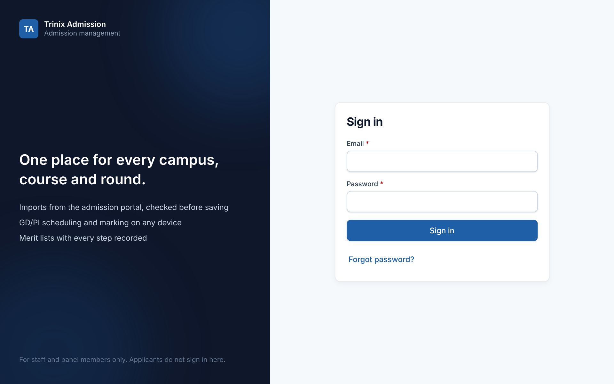
The sign-in page
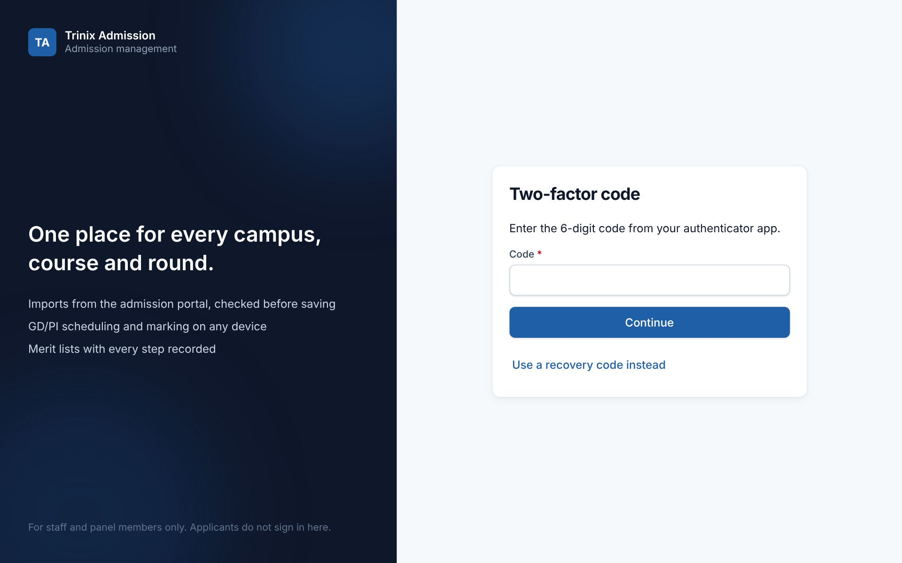
The two-factor code step
Two-factor sign-in
Administrators (Super Admin, IT Administrator, Central Admission Administrator, Branch Administrator) must use two-factor sign-in. At your first sign-in you are taken to Account to set it up:
Install an authenticator app on your phone (for example Google Authenticator or Microsoft Authenticator).
Click Set up two-factor, confirm your password, and scan the QR code with the app.
Type the 6-digit code the app shows, click Turn on, and save the recovery codes somewhere safe. Each one lets you sign in once if you lose your phone.
After that, each sign-in asks for your password and then the current 6-digit code.
Forgot your password? Use Forgot password? on the sign-in page; a reset link is emailed to you. After several wrong passwords the account locks for a short time; an IT Administrator can unlock it.
The screen layout
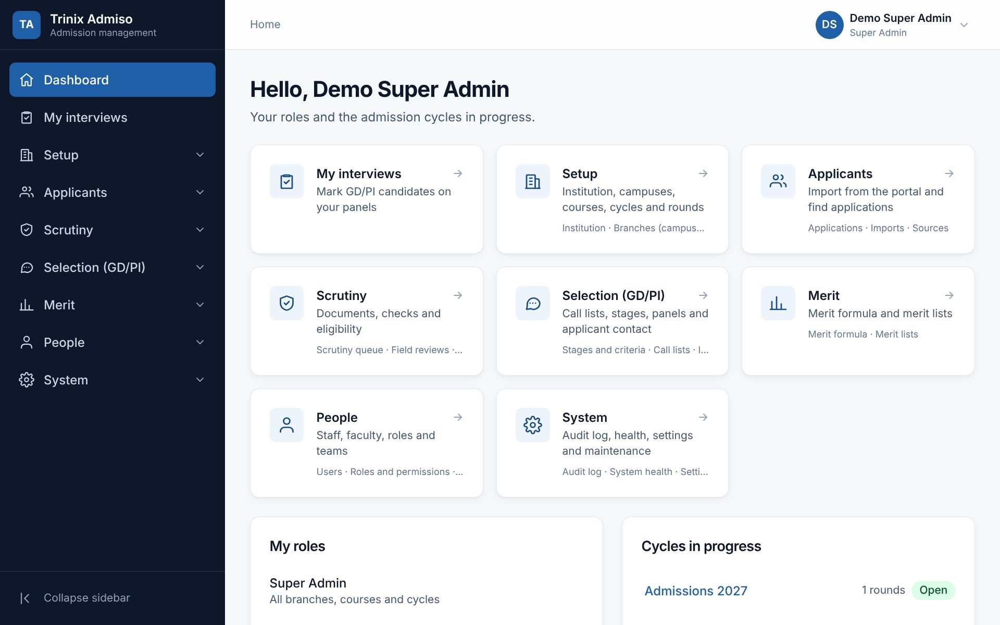
The dashboard, with the sidebar menu on the left and the top bar
Sidebar menu (left): the modules in the order of the admission work. Click a group (for example Interviews (GD/PI)) to open its sub-menu; the page you are on is highlighted. You see only the items your role allows.
Collapse sidebar: at the bottom of the sidebar on a computer, this shows icons only to give more room. Click any icon to open the menu again.
Top bar: shows where you are (for example Home › Interviews (GD/PI) › Panels, slots and schedule). Click a part of the path to go back to it.
Your name (top right): opens the account menu, with Account and security, the theme (Light, Dark or Device, which follows your phone or computer) and Sign out.
Dashboard: the Admission workflow for a course and round (below), today's interviews for panel members, shortcut cards for each module you can use, your roles, and the cycles in progress.
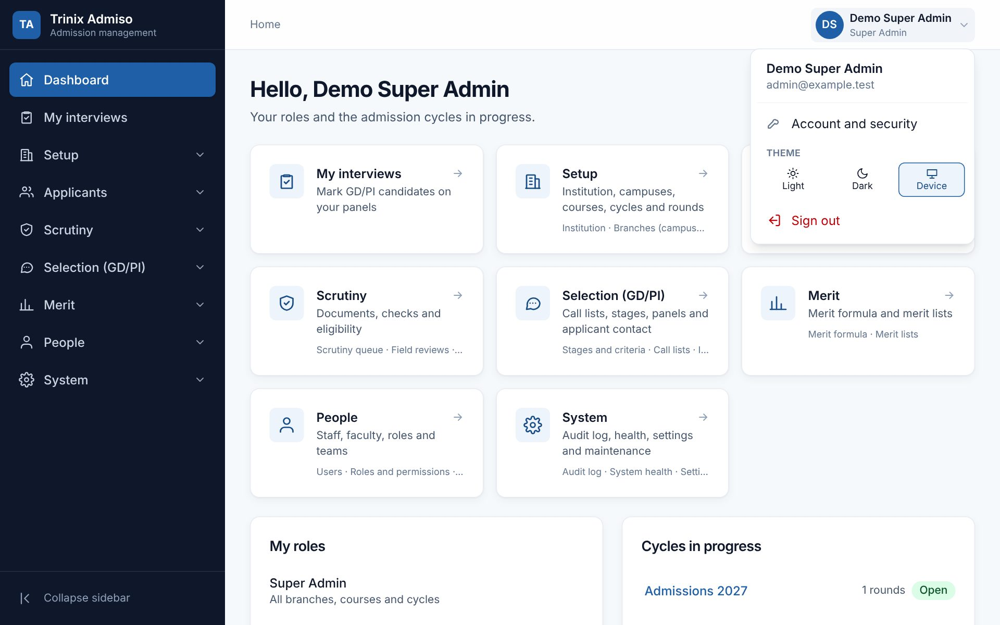
The account menu with the theme switch
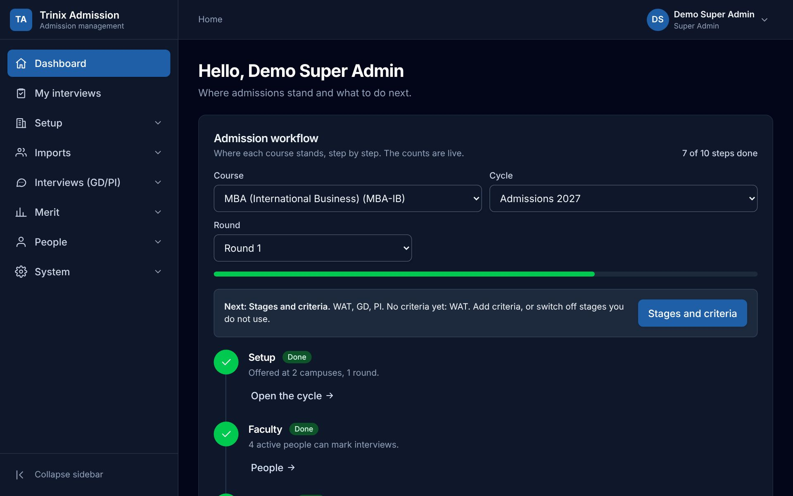
The dark theme
The admission workflow
The top of the dashboard follows one course in one round through every step: Setup, Faculty, Students, Applicants' files (optional), Stages and criteria, Interview schedule, Schedule emails, Attendance and marks, Lock results and the Merit list. Choose the course, cycle and round; each step shows live counts (for example "GD: 2 panels, 45 of 50 scheduled") and a link to the screen where it is done. The box at the top names the next step.
Done (green tick), To do, Needs attention (amber: something is waiting, such as an import to approve or candidates not yet emailed), Not yet (an earlier step must come first) and Optional.
The course, cycle and round you choose are remembered on other screens of this browser until you sign out.
Panel members see My interviews today instead: their panels, how many candidates they have marked, or the date of their next interviews.
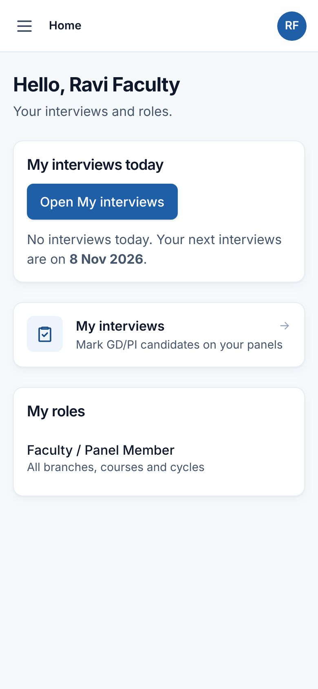
A panel member's dashboard
On a phone or tablet
Everything works on a phone. Tap the menu button (three lines, top left) to open the menu; tap outside it or the × to close it. Tables can be swiped sideways.
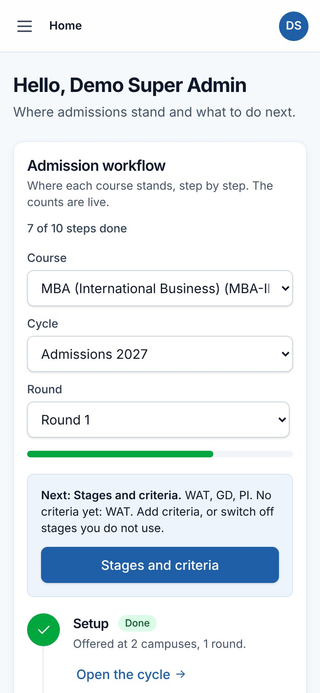
Dashboard on a phoneThe menu on a phone
Account and security
Account shows your roles and lets you change your password, turn two-factor sign-in on or off (where your role allows it), and see new recovery codes. You are signed out automatically after a period of inactivity.
Chapter 3 · Menu: Setup
Setup
Setup is done once, by a Super Admin or Central Admission Administrator, and updated each year. Do it in this order.
Institution, branches (campuses) and locations
Institution: the institute's name and details, used in emails.
Branches (campuses): one record per campus, e.g. Delhi, Kolkata, Kakinada, GIFT City. The code (e.g. DEL, KOL) is what portal files use for campus preferences, so choose it carefully. It cannot change once in use.
Locations: addresses where things happen, for example campuses and interview centres in other cities. GD/PI panels are held at a location (or online).
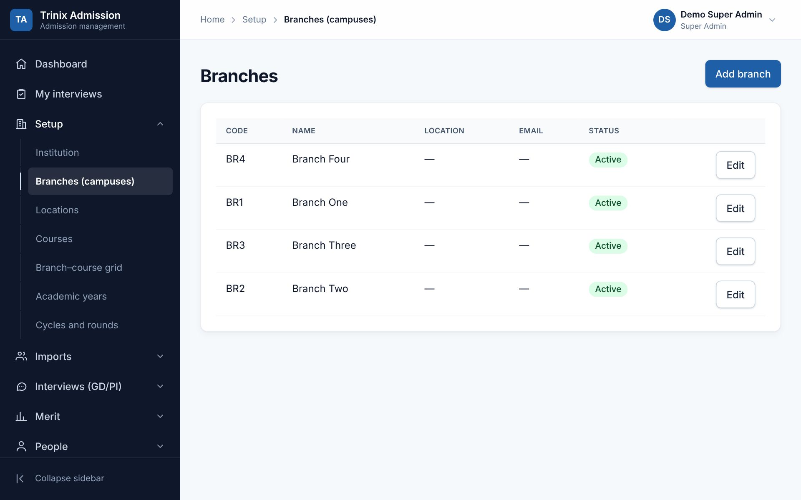
Branches (campuses)
Courses and the branch–course grid
Courses lists each programme (e.g. MBA-IB, MBA-BA, IPM) with its level, duration and entrance exam (CAT or IPMAT). The Branch–course grid says which campus offers which course: tick the boxes and save.
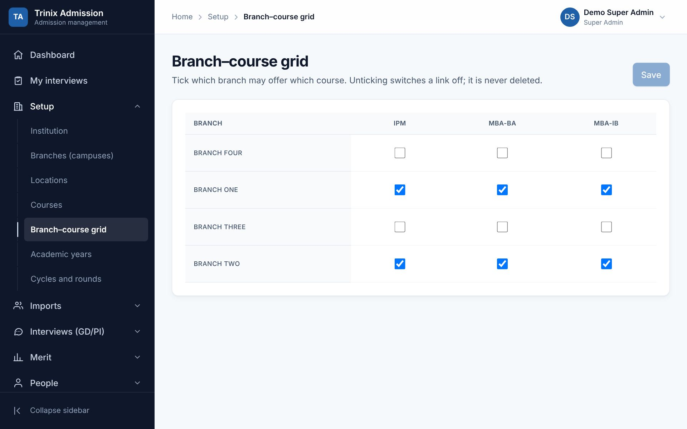
Which campus offers which course
Academic years and admission cycles
Academic years: add the year, e.g. 2027-28 with its start and end dates.
Cycles and rounds → Add cycle: the admission cycle for that year, e.g. Admissions 2027.
Open the cycle and use Add offering for each campus and course it admits to, with the sanctioned intake (seats), e.g. MBA (IB) Delhi 240.
Click Open cycle when it is ready.
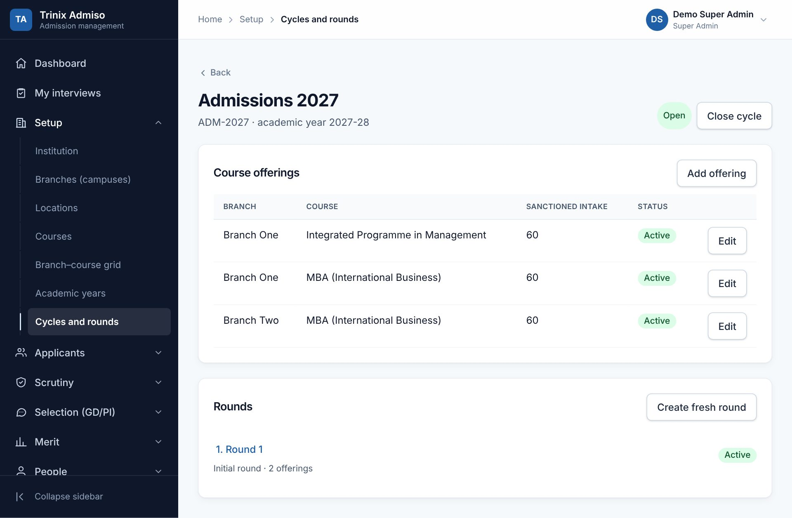
A cycle with its offerings (seats) and rounds
Rounds and campus-wise dates
Applicants are imported round by round (Round 1, Round 2, …). In the cycle, click Create first round (later: Add round), then on the round page:
Tick each campus and course in the round and give its start and end dates. Dates can differ by campus.
Click Save offerings and dates, then Activate.
When the round is over, click Close round and give a reason. A closed round is read-only; Reopen needs a reason and is recorded.
Rounds may start before the academic year, because admissions run ahead of it (e.g. from December 2026 for 2027-28), but must end by the year's end. Two rounds of the same campus and course cannot overlap.
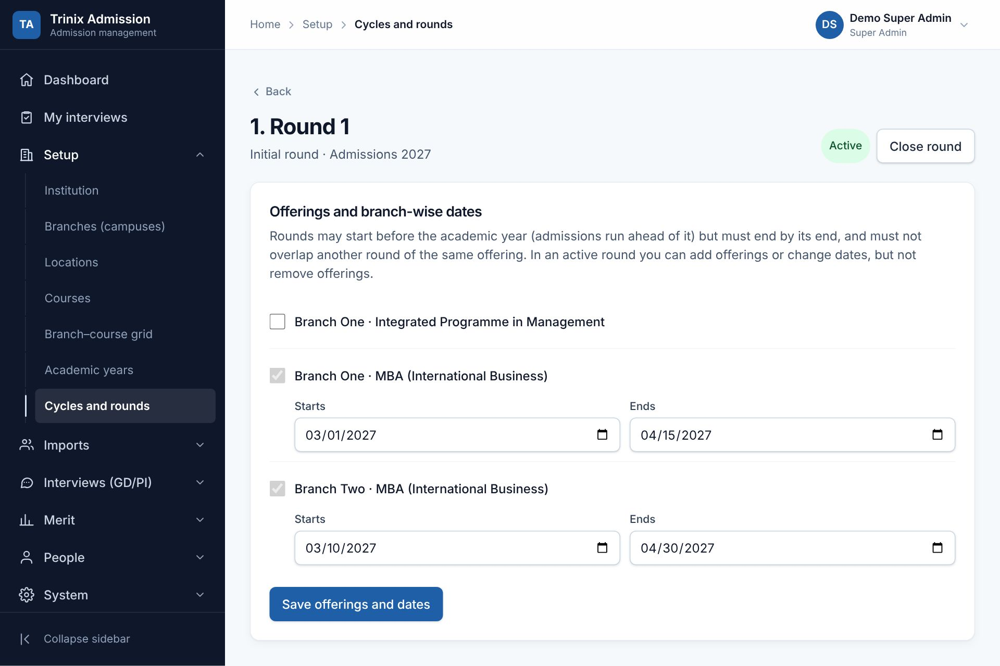
Campus-wise dates of a round
Chapter 4 · Menu: People
People
Users and invitations
Users lists everyone who can sign in. Invite user creates an account and emails an invitation. Give each person a role and, if needed, a scope: a campus, a course and/or a cycle. Leave a box empty for "all".
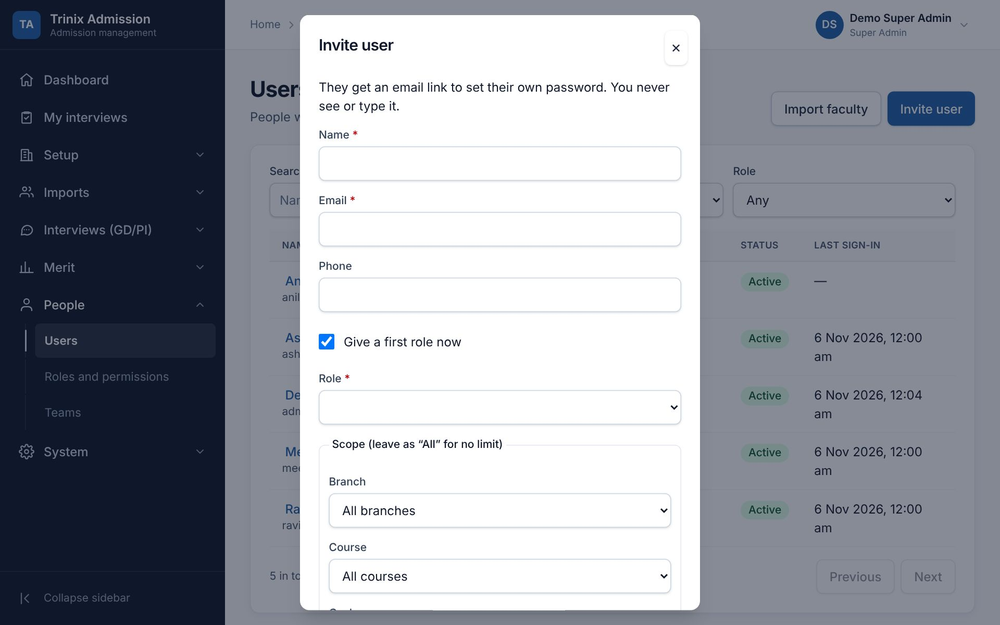
Inviting a user with a role and scope
A person can hold several roles. Open the user and use Add role.
Roles are removed (revoked) with a reason; the history is kept.
Nobody can give a role or scope wider than their own, or change their own roles.
Suspend stops someone signing in, with a reason; Reactivate restores access.
Importing faculty and panel members
To add many faculty at once, use Users → Import faculty:
Prepare an Excel or CSV file with the columns Name and Email, and optionally Mobile, Designation, Department, Campus (branch code, e.g. DEL) and Role: Faculty / Panel Member, Committee Member or Committee Chairperson, with several separated by ";".
Choose the file. Tick Also give the Committee Member role if panel members are also committee members.
Click Check the file. Each row shows whether the person is new, existing (gets the roles) or unchanged, or has an error such as a bad email, an unknown campus or a duplicate.
Click Confirm and send invitations. New people get an invitation email. Existing people only gain roles; nothing is ever removed.
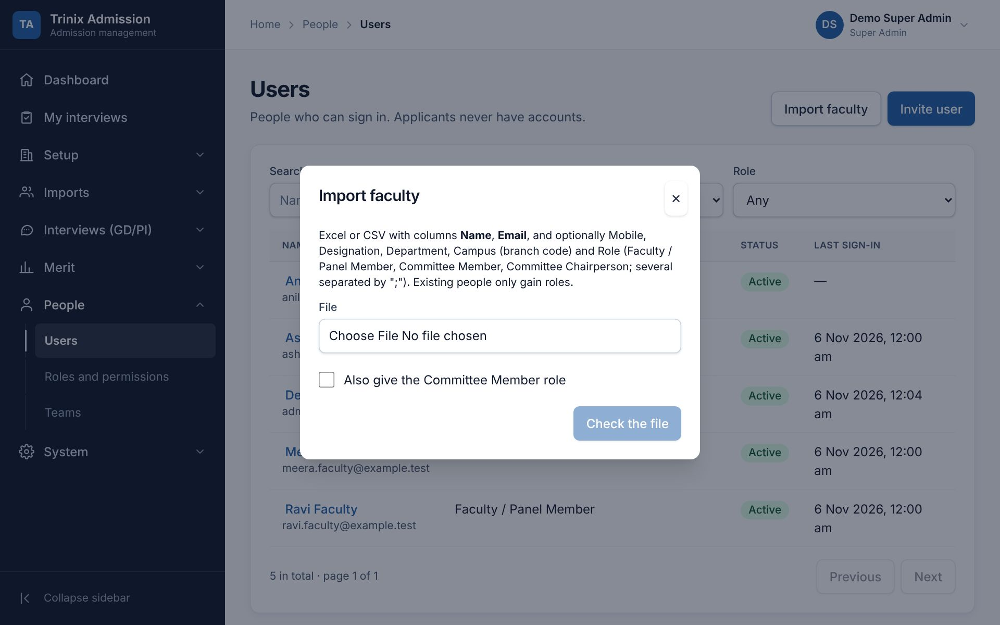
Import faculty
Login sheet for panel and committee members
Instead of email links, panel and committee members can be given a printed slip with their sign-in details. Users → Login sheet:
Tick the people (by default, everyone who has never signed in). Search by name, email or role.
Click Make passwords for …. Each person gets a new temporary password, such as k7mq-3hxp-9tbw (no look-alike letters). Their old password and any invitation link stop working.
Click Print the sheet: one slip per person with the website, their email and the password. The passwords are not shown again; for a lost slip, make a new sheet for that person.
At first sign-in the person must choose their own password before anything else opens.
Administrators (roles that need two-factor sign-in) are not offered a sheet: they use invitation links. Every sheet is recorded in the audit log, never with the passwords.
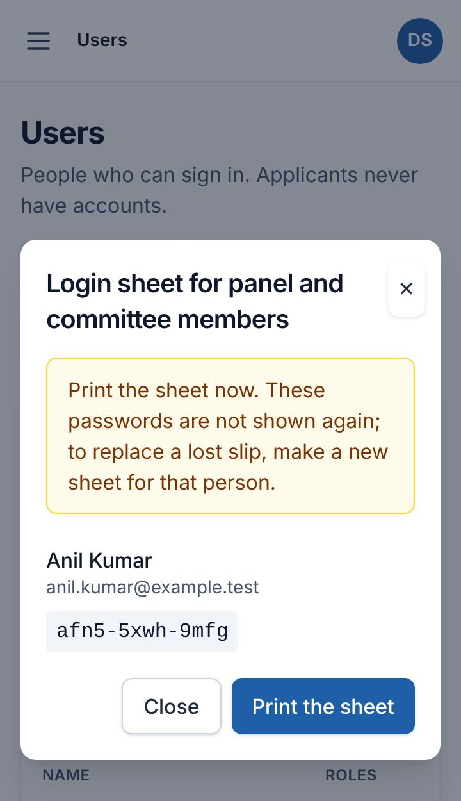
The passwords, shown once, ready to print
Roles and permissions, teams
Roles and permissions shows what each role may do (see Chapter 10). Only the Super Admin can change a role's permissions. Teams holds committees and admission cells, with their members and history.
Chapter 5 · Menu: Applicants
Applicants and imports
Sources
A source is where applicant data comes from, normally the Admission portal. In Sources (Super Admin), add the source and, if the portal will send data through the API, create a source token. It is shown once only; give it to the portal's technical team.
Importing a portal file
Only the shortlisted applicants of a round are imported. Every import goes through the same checks, and nothing reaches the applicant records until a second person approves it.
Imports → New import: choose the source, the round, the course (or "All courses in the file"), and the Excel/CSV file. Click Upload.
Match the columns: for each field (application number, name, CAT number, percentile, category, marks, campus preferences, GD/PI centre preferences, …) pick the column in the file. Add value translations where the portal uses different words, e.g. "General" → GEN or "OBC" → OBC-NCL. Save as template so next time it is filled in for you.
Click Check the rows. The batch shows New, Updates (changes to applicants already imported), Unchanged, Duplicates and Errors, row by row. You can exclude rows, with a reason.
A different person with approval rights opens the batch and clicks Approve and write. The batch then says "Every row is accounted for".
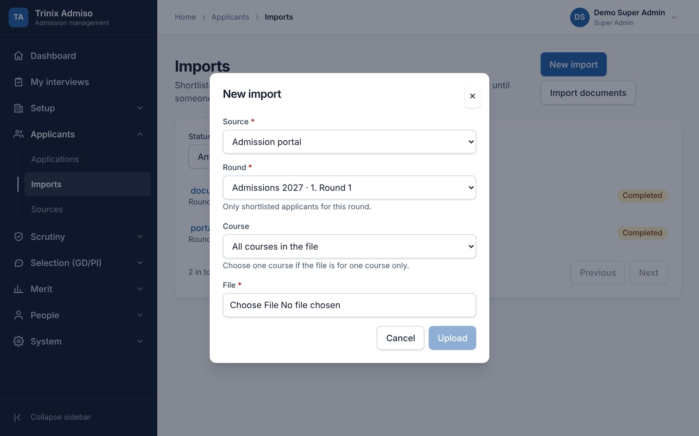
Starting a new import for a round
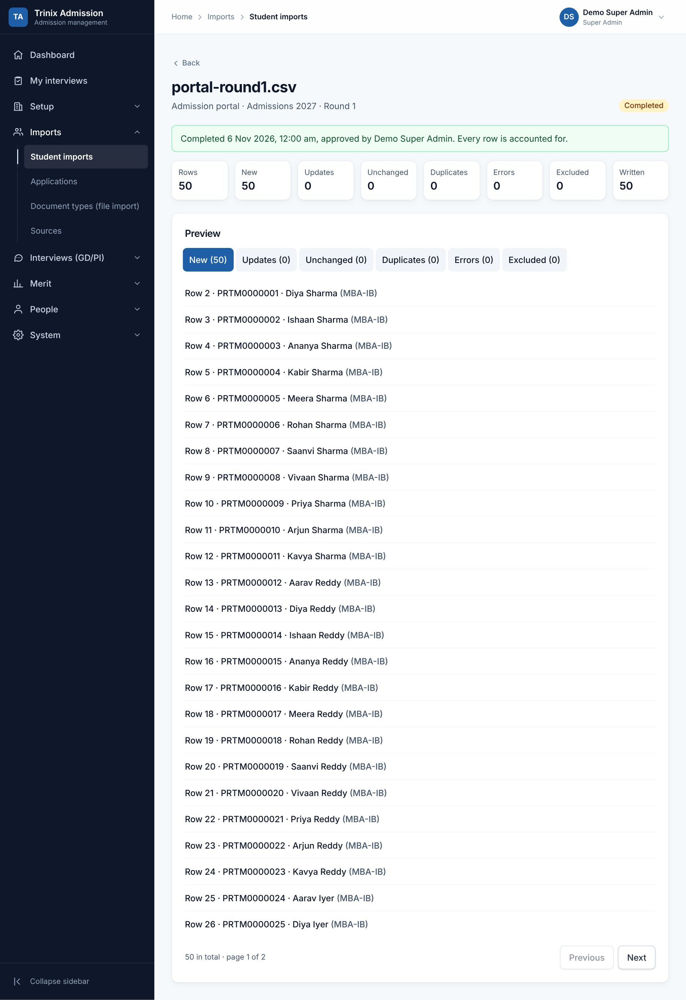
An import batch: counts and the preview of every row
Duplicates and updates. An applicant is identified by source + portal application number + course + cycle. A later round's file adds new applicants and shows changes to existing ones as updates. Everyone imported into a round is a GD/PI candidate of that round. Empty cells never erase stored data. A student who applied to two MBA courses has two application numbers and two separate records.
Applications
Applications lists applicants in your scope. Search by application number, CAT/IPMAT number or name, and filter by course, round or status. Open an application to see its tabs:
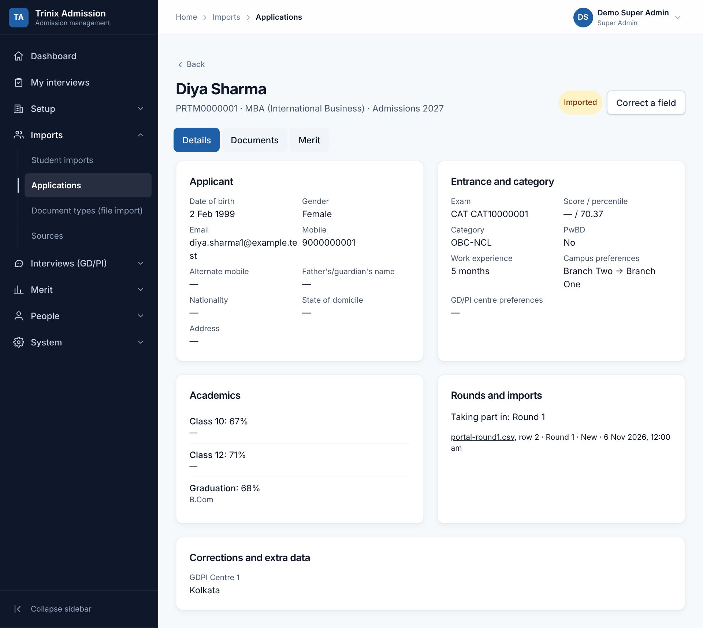
An application: details tab
Tab
What it holds
Details
Personal and contact details, entrance scores, academics, campus preferences, GD/PI centre preferences, rounds, status history, corrections
Documents
Files imported or uploaded (optional), with versions and scan status
Merit
The applicant's place in published merit lists (Chapter 8)
Applicants' files (optional)
If the portal gives applicants' documents, first load the document types under Imports → Document types (Load the suggested types, then edit). Then Imports → Import documents: upload a ZIP whose file names start with the application number and end with the type code, e.g. PRTM0000001_CLASS10.pdf. The import is previewed and approved like a data import. Every file is checked and virus-scanned, and opens only through a short signed link, which is recorded.
Correct a field changes a value with a reason; the old and new values are kept. If the same CAT number appears on another application you can see, a note shows it (the records are never merged).
Chapter 6 · Menu: Interviews (GD/PI)
Interviews (GD/PI)
Stages and criteria (each cycle)
Stages and criteria (choose the course and cycle) defines the selection stages, e.g. WAT, GD, PI for MBA and WAT, PI for IPM. For each stage the admin sets:
Criteria and maximum marks, e.g. Content 10 and Communication 10. These are set for every cycle; Copy stages and criteria brings last cycle's set in to edit. Once marks are entered, the criteria can no longer change.
Remarks required: always, never, or only when the total is below a value.
Stage result from panel members' totals: the formula combining the members' marks. Use AVG (average), MEDIAN, or a formula such as (SUM - MAX - MIN) / (COUNT - 2), which drops the highest and lowest marks. Members needed for this formula: with fewer members marking, the plain average is used. The formula cannot change once any result in the stage is locked.
Flag a member's total this far from the average (optional): highlights unusual marks.
Switch off a stage the course does not use this cycle (for example WAT, if it is not held). A switched-off stage takes no new panels and is left out of the schedule template, automatic allocation and the workflow. Switch on brings it back.
For a later stage (e.g. PI): Panel sees marks from earlier stages, and Minimum GD average to be sent here (optional).
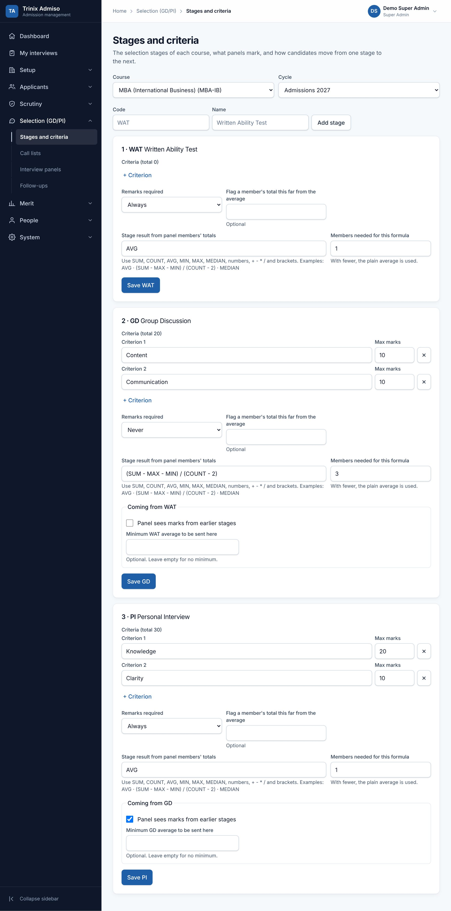
Stages, criteria and settings
The interview schedule from Excel
Everyone imported into a round is a candidate; there are no call lists. Plan the interviews in Excel:
Panels, slots and schedule → choose the course and cycle → Download Excel template.
Fill one row per slot:
stage (GD or PI), panel name, date (DD-MM-YYYY), mode (In person or Online);
for in person: the venue (a location code or name from Setup → Locations), optionally the city and room;
for online: the meeting link;
slot start and end (e.g. 10:00 and 10:45), and candidates per slot;
panel members' emails, separated by ;.
Rows with the same stage, panel and date make one panel.
Choose the round, pick the filled file and click Upload and check. Every problem is listed by row: an unknown stage, venue or member, times out of order, overlapping slots, or a member on two panels at the same time. Fix the file and upload it again.
When there are no problems, check the preview and click Save the schedule. Everything is saved at once, or nothing. A panel that already exists (same name, stage and date) gets the new slots and members.
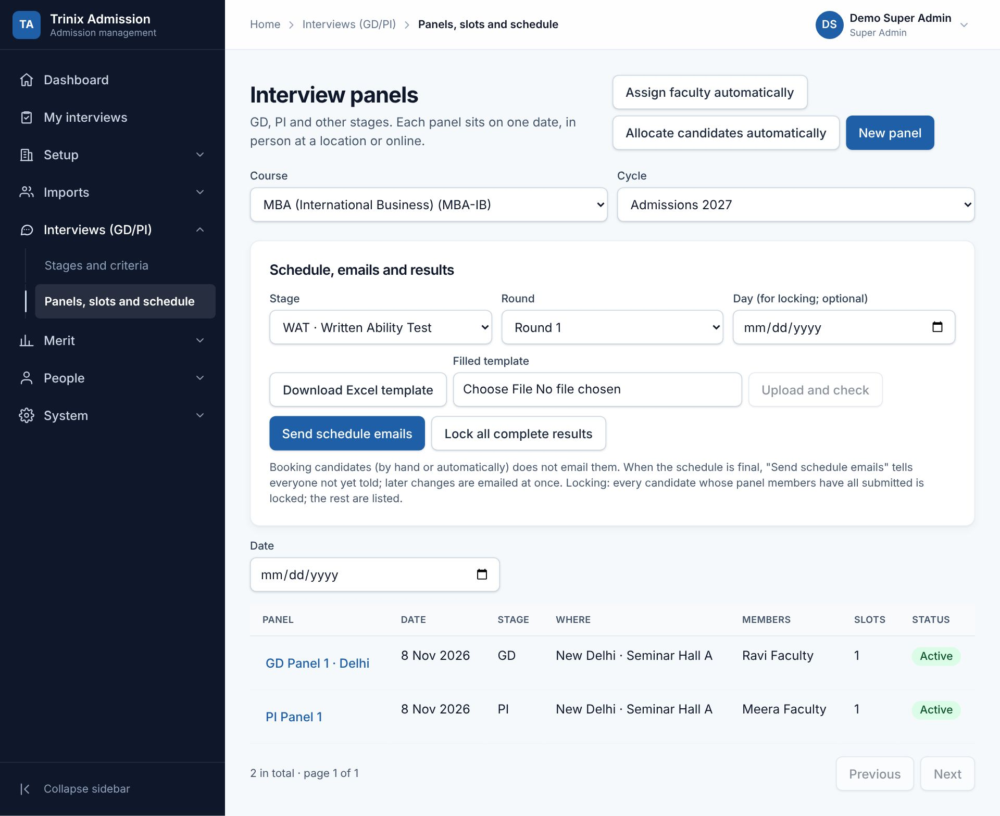
Panels, slots and schedule: the Excel template, schedule emails and locking
Interview panels
Interview panels → New panel: the stage, round, name, date, and in person (location and room, in any city) or online (meeting link). On the panel page:
Members: search for faculty or committee members and add them. A chair is optional.
Slots: start and end time (IST) and how many candidates. Use 8–10 for a GD group, or 1 for a PI. How many back to back makes a series of slots at once.
Schedule an applicant books one applicant of the round into a slot. Fill fills the free places, optionally only with applicants from one city.
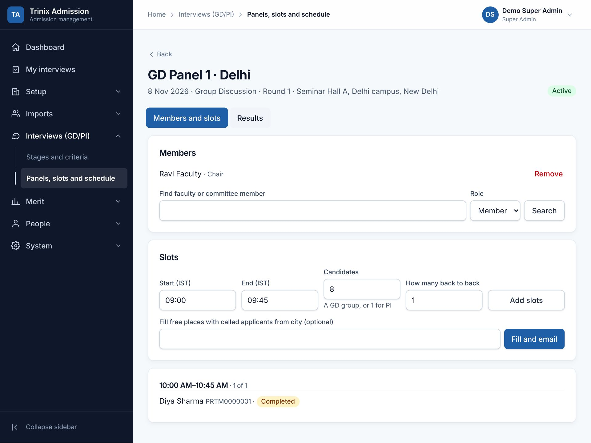
A GD panel: members, slots and candidates
Automatic allocation, with changes by hand
On Interview panels, two buttons do the allocation for a whole stage. Both show a preview, and nothing is saved until you confirm.
Allocate candidates automatically: applicants of the round not yet scheduled for the stage are spread over the stage's panels. The order is the applicant's GD/PI centre preference 1, 2, 3, then their city, then any other in-person centre, then online. Everyone who can get their first choice is placed before anyone gets a second choice, and panels are filled evenly. For PI, only applicants whose GD result is locked are placed, in a slot after their GD. After an in-person GD, the PI is at the same venue, on a panel without the GD panel's members where possible.
Slot order: in Stages and criteria, each stage has up to three keys (name, gender, date of birth, application number, each ascending or descending) that decide the order in which candidates fill the slots after their centre preference.
Different panel for PI: if a PI panel has a member who already marked the candidate in GD, a warning names them. Booking a PI at another venue than an in-person GD is refused.
Assign faculty automatically: fills panels with the number of members you choose from the people who can mark, optionally only from one campus. Work is spread evenly and nobody is on two panels at the same time.
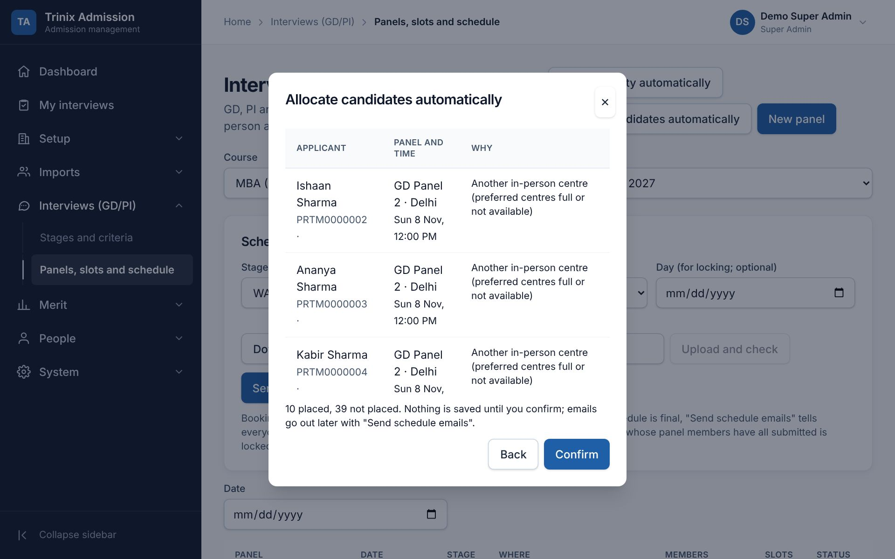
Allocate candidates automatically
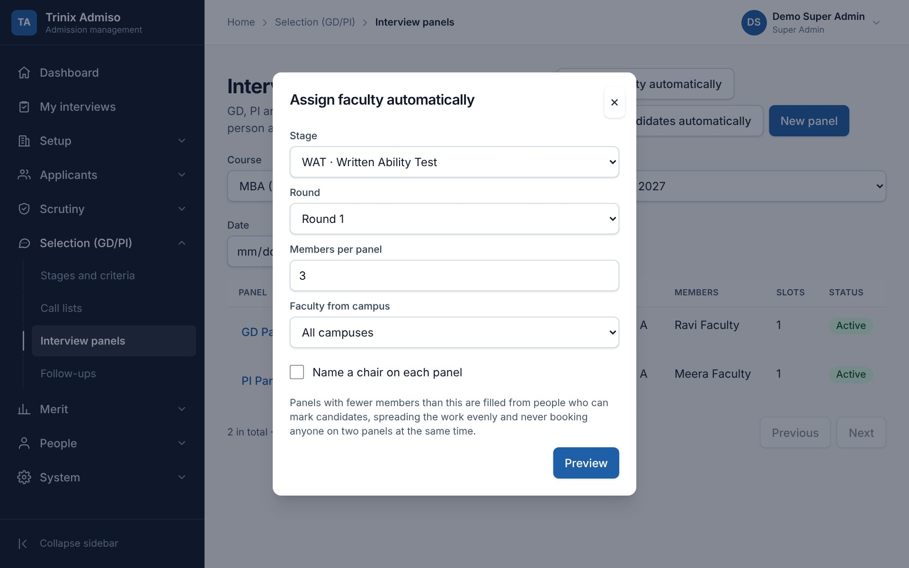
Assign faculty automatically
Changes by hand on the panel page: Move a candidate to another slot, Swap two candidates (on any panels of the same stage), or Cancel. Each needs a reason; applicants who were already sent their schedule are emailed the new time. A reminder email goes to every applicant the day before their interview.
Fix the schedule, then send the emails
Booking candidates, by hand or automatically, does not email them, so you can change the schedule freely. When it is final, choose the stage and round under Schedule, emails and results and click Send schedule emails: everyone booked and not yet told gets their date, time and venue (or meeting link). Candidates not yet emailed show "not emailed yet" on the panel page.
The system refuses clashes: an applicant in two overlapping slots or twice in a stage, a full slot, a member on two panels at once, or a member who has declared a conflict of interest with the applicant.
Results and sending candidates on to PI
The panel's Results tab shows each candidate's marks from every member, the stage result and any unusual marks. When everyone has submitted, the admin locks the result: Lock for one candidate, or Lock all complete results on the Panels page for a whole stage (optionally one day). Candidates whose marks are not complete are listed and stay open. Locked GD candidates can be sent on to a PI panel: tick them, choose the panel (at the same venue for in-person GDs), and each gets the next free slot after their GD.
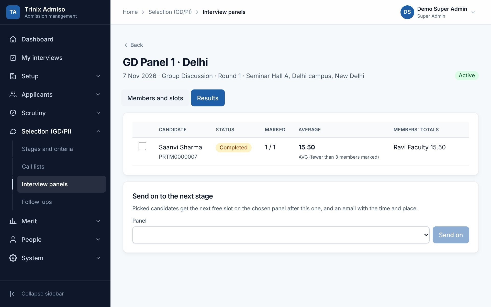
Panel results and sending on to PI
Chapter 7 · For panel members · Menu: My interviews
Marking interviews
Panel members mark on their own phone or tablet during the GD or PI. An internet connection is needed; marks are saved as you type.
Sign in and open My interviews. Choose the date if it is not today.
Your panel, venue (or meeting link) and the time slots are shown. Tap a slot.
When a candidate arrives, tap Present (or Absent) on their card. On a panel without a chair, any member can do this.
Enter the marks for each criterion: type them, or use − and + (steps of 0.5). The total and a bar at the top of the card update as you go. A mark above the maximum turns red and is not saved until corrected. The bar at the top of the screen shows "✓ Saved" when your marks are stored, and how many candidates of the slot are done.
Add remarks where the stage requires them.
Tap Submit (PI; the button shows the total) or Submit marks for this group (GD). Submitted and absent candidates fold into one line; tap a line to open it again. You cannot change submitted marks; the admin locks the results when every member has submitted.
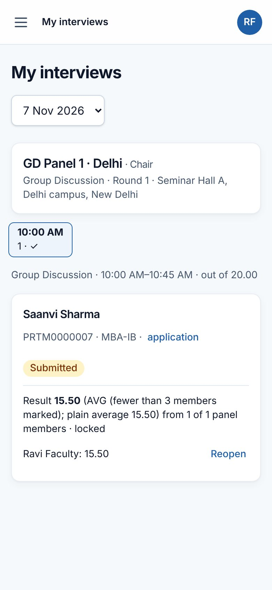
A GD slot on a phone
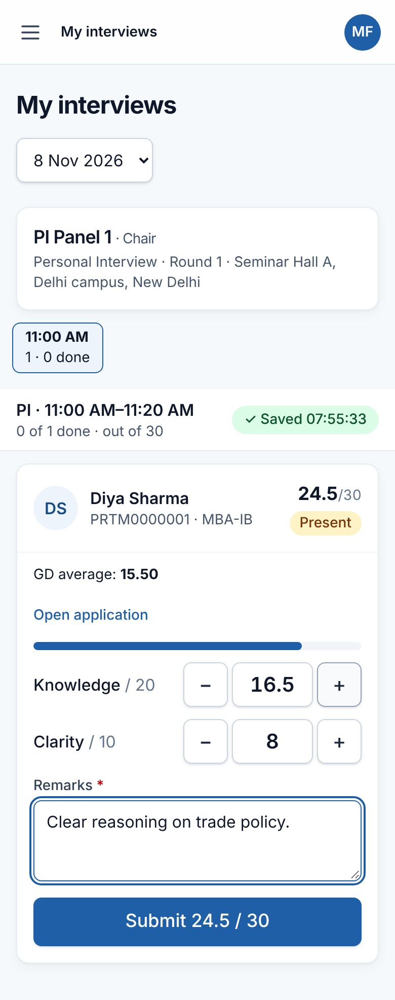
A PI slot, showing the GD result
You see other members' marks only after you submit your own.
Made a mistake after submitting? The admin can reopen your marks, with a reason; the earlier marks are kept in the history.
If you know a candidate personally, tap Declare a conflict of interest before marking. You will not mark that candidate, and the office can move them.
The application link opens the candidate's full application and documents, for your own candidates only. Each opening is recorded.
Chapter 8 · Menu: Merit
Merit
The merit formula
Merit formula (choose the course and cycle) holds IIFT's formula as a weighted sum of components. Start a formula (or New version), then add each component:
Setting
Meaning
Reads
The value used: entrance percentile or score, a sectional score, academic marks (%), work experience (months), a selection stage result (WAT/GD/PI), or an applicant field with a points table
How
Scale to weight (value ÷ highest possible value × weight), Ranges → points (e.g. months of experience to points), Value → points, or As is × weight
Weight, cap
Points at the highest value (or a multiplier), and an optional maximum
When missing
Leave the candidate out (with the reason), or count as zero
Minimum to be ranked
Optional, per category, e.g. a minimum PI result
Also set the tie-break order (e.g. higher PI result first, then higher CAT percentile, then older candidate first), the decimals (always rounded half up), and the source. Try it on one candidate shows the calculation for any application number before you approve. A Committee Chairperson or Central Admin clicks Approve.
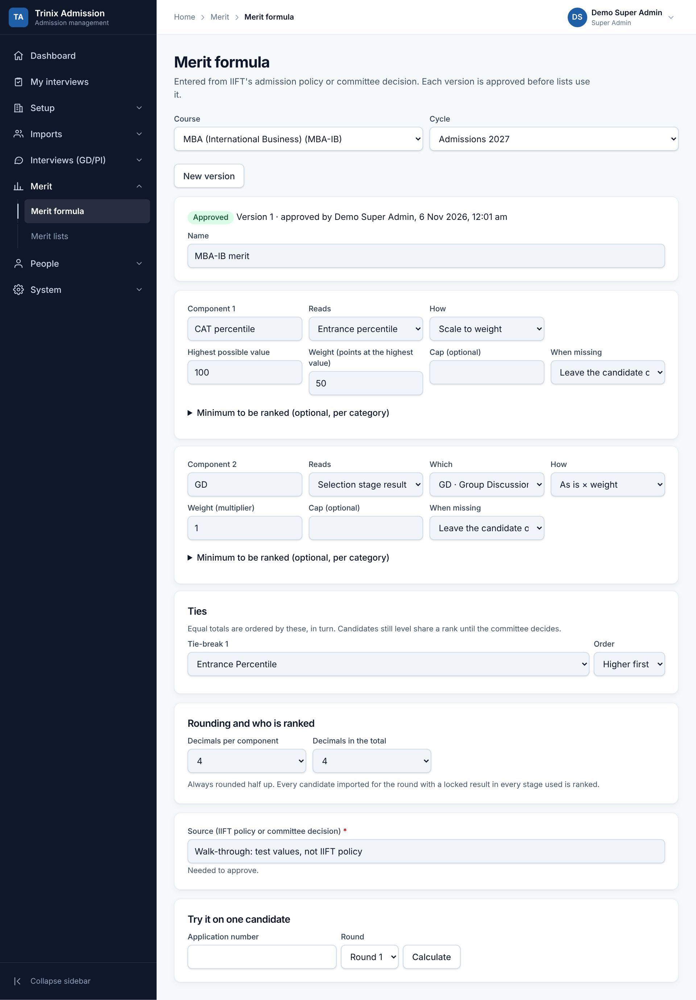
A merit formula with two components and a tie-break
Academic marks are used as the percentage the applicant gave. If only a CGPA was given, the value counts as missing and the list shows "percentage not given".
Merit lists
Merit lists → choose course, cycle and round → Run the formula.
Check the Ranked, Left out (with reasons) and Shared ranks tabs. Click a name for the full breakdown. Filter by category to see category ranks, or by PwBD.
Candidates still level after every tie-break share a rank. The committee orders them on the Shared ranks tab, with a reason.
A different person clicks Approve, then Publish. A published list is read-only.
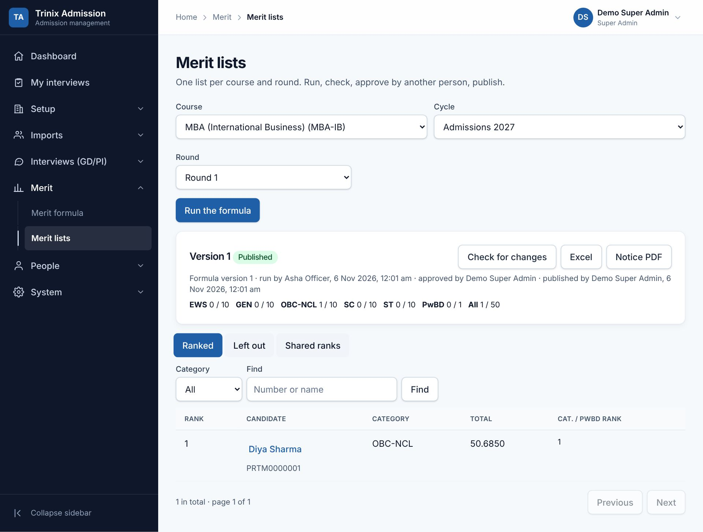
A published merit list
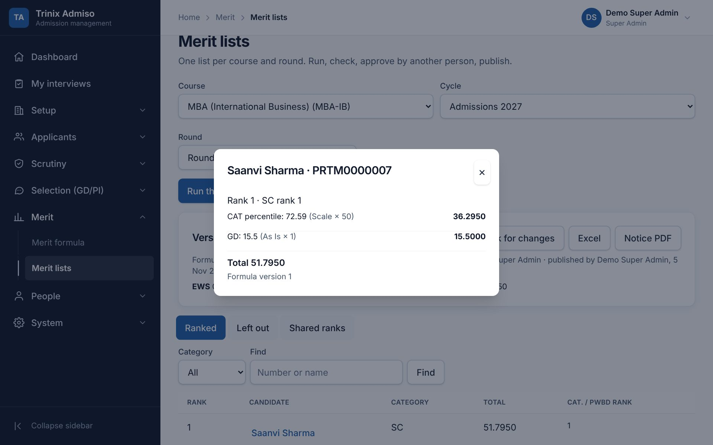
One candidate's breakdown
Excel exports the full breakdown for the committee. Notice PDF gives a notice-board list (number, name, category, total and ranks, with no contact details). Both are recorded.
Check for changes compares the list with today's data and re-calculates the stored data to confirm the result. If marks are reopened or a field is corrected after publishing, the list is marked out of date; run a new version, and Compare shows what changed.
Chapter 9 · Menu: System · For IT and administrators
System administration
Installation (first time)
Upload the release package to the server so that the web address points at its public folder, then open https://<your site>/install. The wizard:
checks the server (PHP 8.3 and its extensions, writable folders; Redis and ClamAV can be added later);
connects to the database (MySQL 8);
sets the site address, time zone (Asia/Kolkata) and email server, with a test email;
sets file storage, Redis and virus scanning;
saves the settings, creates the tables, and creates the first Super Admin.
The wizard closes for good once the first Super Admin exists. The last page shows the cron job to add, which runs every minute. It sends reminders and, on servers without Redis, also processes imports and emails, so these do not move without it. Full steps for shared hosting are in the deployment guide that comes with the system.
Updates
Upload the new release over the old one, keeping the .env file and the storage folder. Then an IT Administrator opens System → Maintenance. If database updates are pending they are listed: take a backup first, type MIGRATE and your password, and click Apply updates.
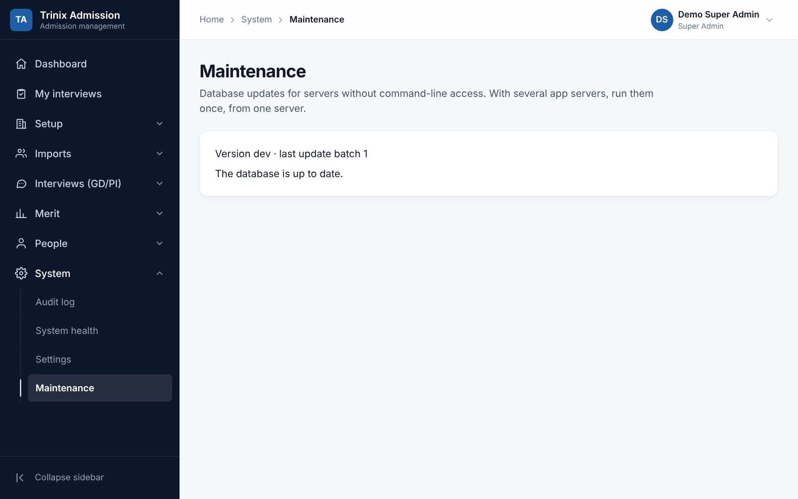
Maintenance: pending database updates
Backups
System → Backups (Super Admin). Backups are made by the system itself, so no command-line access is needed.
Backup password (at least 12 characters). Every backup is an encrypted ZIP (AES-256) that opens only with it. It is never shown again or emailed: keep it in a safe place. Changing it affects new backups only.
Schedule and email: tick Make a database backup every day, choose the time (IST), how many to keep, the day of the weekly full backup (database and documents), and up to three email addresses. The daily backup is emailed as the encrypted ZIP; if it is larger than the limit you set, a notice is sent instead and the file stays on the server.
Back up now makes (and emails) a database backup at once; Full backup now includes the documents. Download saves a backup to your computer; every download is recorded.
Restoring (Super Admin only): click Restore next to a backup, or first Upload a backup (for example the ZIP from an email). Type RESTORE, your password, and the backup password if it was different. The system first makes a safety backup of the current data, then replaces the database with the backup (a full backup also puts the documents back). Changes made after the backup was taken are lost; anything that went wrong can be undone by restoring the safety backup. A backup from a newer version of the system is refused: update the system first.
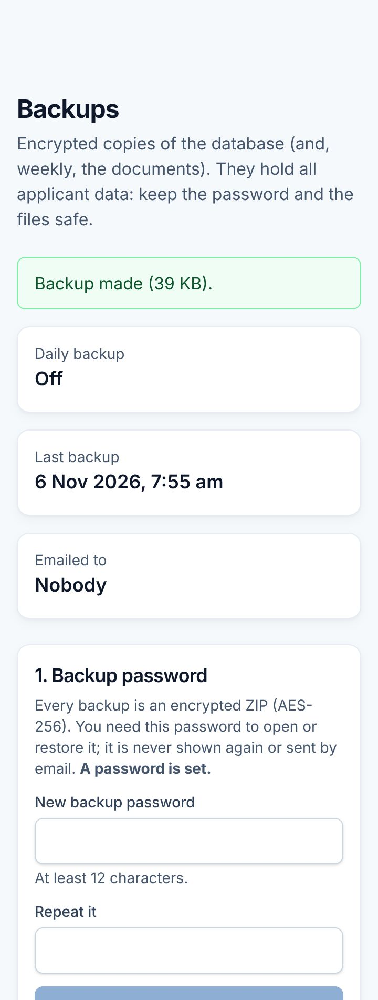
Backups: password, schedule and email, and the backups on the server
The daily backup needs the every-minute cron job. System health shows a problem when daily backups are off or the last backup is more than a day old. The emailed ZIP holds applicants' personal data: send it only to a mailbox the institution controls.
Health, settings, audit
System health: database, Redis, storage, the virus scanner, the scheduler (cron), the queues and the last backup. A warning here needs IT attention.
Settings: for example the session timeout, sign-in lock rules, invitation expiry, support email, deficiency reply days, and allowed document-link websites. Technical settings belong to the IT Administrator.
Audit log: every change, with who, when, the old and new values and the reason. Filter by date, person, action or record.
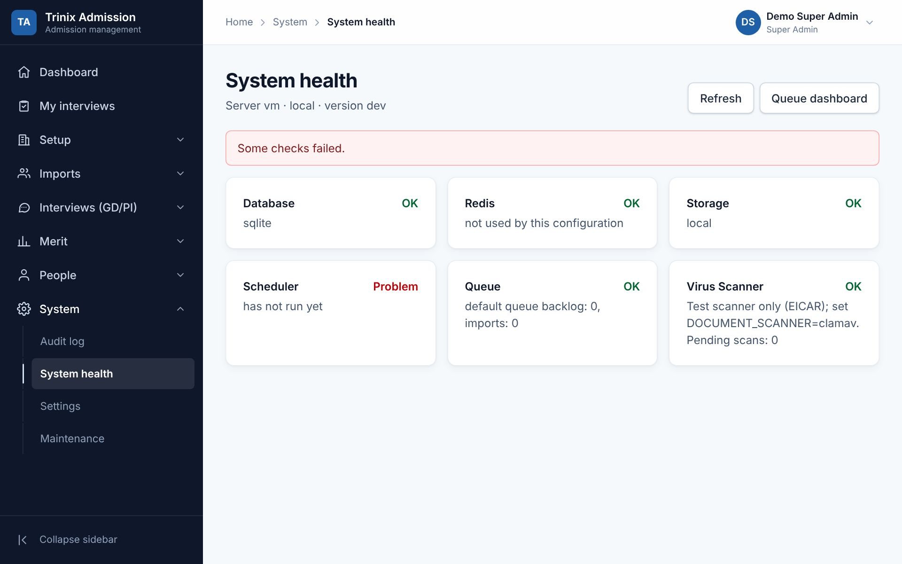
System health
Personal data. Applicant data is covered by the DPDP Act 2023. Give accounts only to people who need them, keep the site on HTTPS, use real virus scanning (ClamAV) before real documents are uploaded, and keep the emailed or downloaded backups (and the backup password) in safe places off the server.
Chapter 10
Roles at a glance
Each role can be limited to a campus, course and/or cycle. The exact permissions are under People → Roles and permissions.